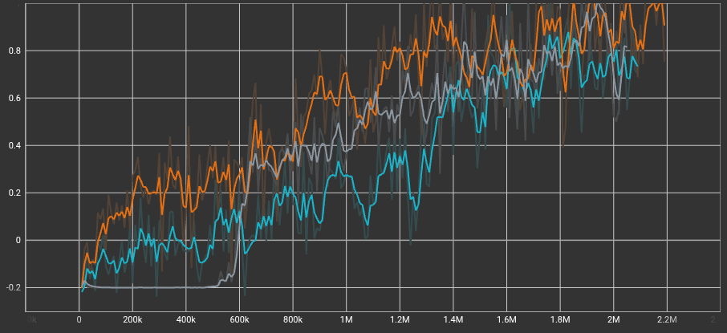
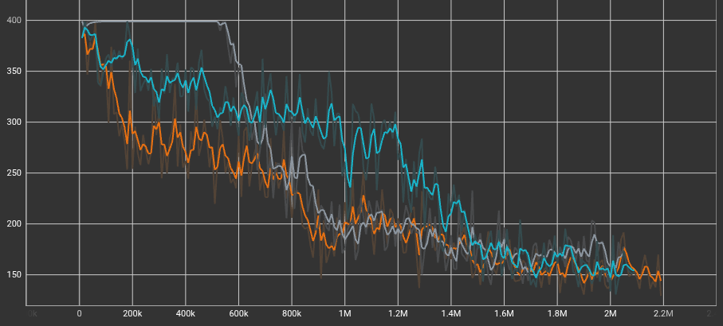
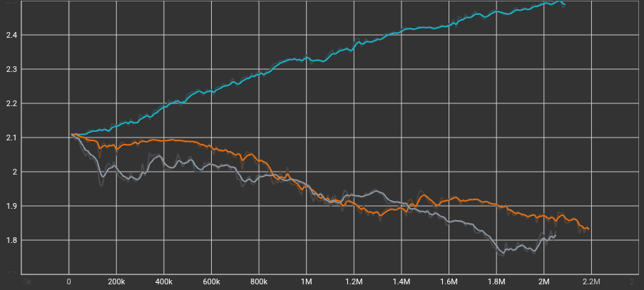

Unity Engine • MLAgents • Reinforcement Learning
This project involves training a Reinforcement Learning agent to play football using the Google Research Football environment. The agent was trained using PPO. This project was designed to test the limits of self-play reinforcement learning in a continuous, physics-heavy environment. The agents control physical rigidbodies and must learn to navigate, jump, kick, and defend without any hardcoded behavior trees or state machines.
One of the biggest challenges in this environment was overcoming the Nash Equilibrium—where agents realized that defending their own goal yielded a mathematically safer reward (0.0) than risking a midfield tackle (-1.0).

The Big Brain (orange line) establishes an early lead in cumulative reward and maintains the highest overall performance throughout most of the training. Interestingly, the Baseline (grey line) struggles initially, staying flat near -0.2 until around 600k steps, before rapidly learning and catching up to the others. The Wildcard (teal line) shows a more gradual, consistent learning curve than the Baseline but generally plateaus slightly lower than the Big Brain.

As the agents become more highly skilled, the average episode lengths for all three models decrease significantly, starting near 400 and converging around 150 by the end of training. The Baseline (grey line) maintained the maximum episode length for the first 600k steps before finally figuring out how to score, which perfectly aligns with its delayed spike in cumulative reward. Meanwhile, the Big Brain (orange line) learned to conclude episodes much faster early in the training process.

Entropy measures the randomness of the agent's actions. The Wildcard (teal line) exhibits a steadily increasing entropy curve throughout the training session, peaking near 2.5. In contrast, both the Big Brain (orange line) and the Baseline (grey line) show a steady decrease in entropy, gradually dropping below 1.9. This confirms that the hyperparameter tweaks successfully forced the Wildcard to maintain high exploration and unpredictable gameplay.